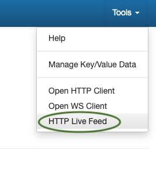
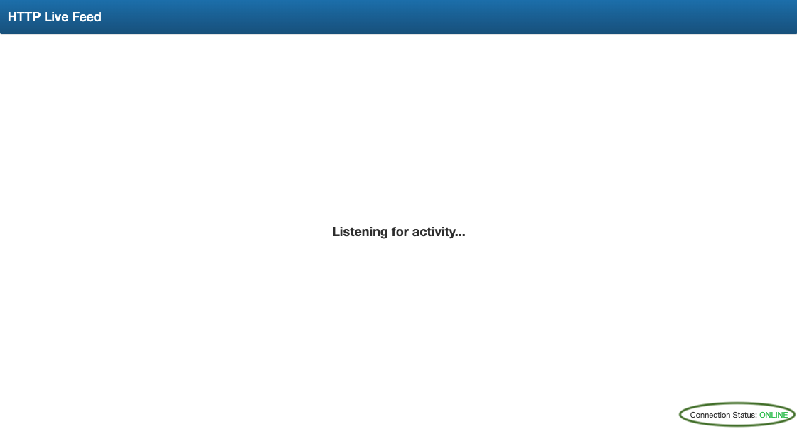
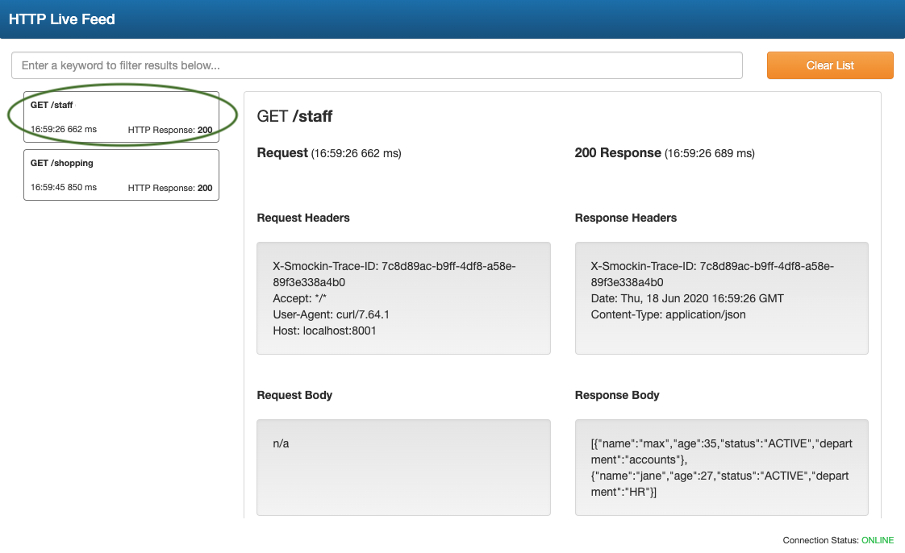
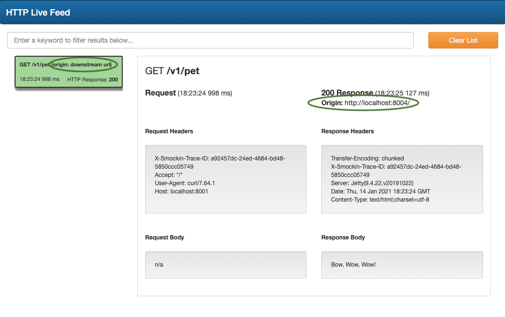

sMockin provides an logging interface for monitoring all traffic to the mock server in real time.
This can be useful when trying to ascertain whether a call was made to a mocked service and to see what the request and response looks like.
Common use cases could be where there is an asynchronous process which eventually makes calls to an endpoint (i.e your mock)
or when running sMockin as a proxy server, so as to see whether the response came from the downstream server or is in fact a mock.
You can access the logging interface by selecting
HTTP Live Feed from the
Tools drop down menu.

An indication of whether the logging interface has successfully connected to the mock server is shown in the bottom right hand corner.

Requests sent to the mock server will appear in a list on the left.
Clicking on each item provides full details of the transaction.

Below is an example of a logging entry, when the sMockin proxy server is enabled.
The areas highlighted are useful for determining whether the final response is a mock or from a downstream service.
